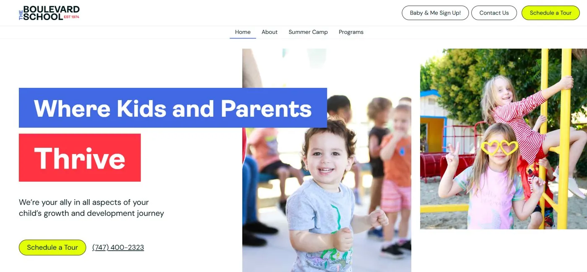
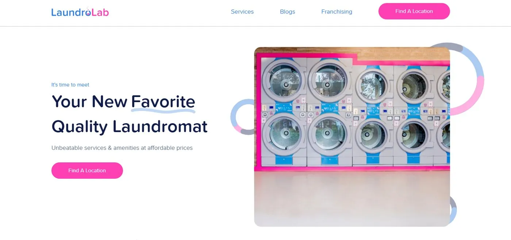
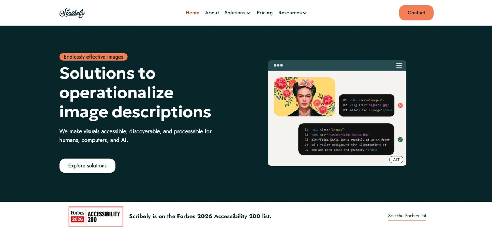
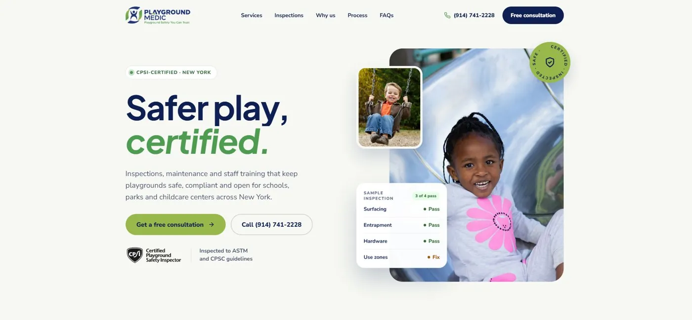
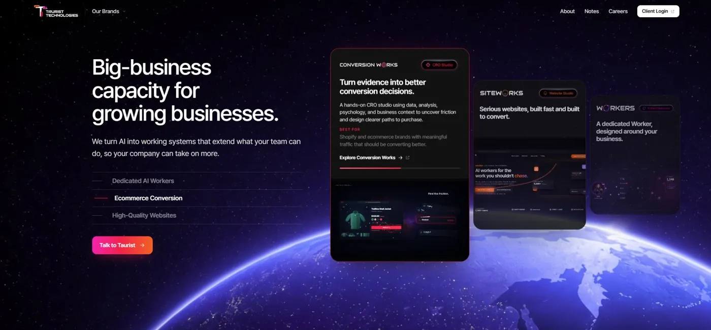

Webflow Migration Expert. Your rankings stay put.
As a certified Webflow migration expert, I move websites from WordPress, Wix, Framer, Squarespace and 10+ other platforms to Webflow, pixel-perfect, with every URL mapped and 301 redirected so your SEO survives the move. You work directly with me, not an account manager.
Webflow migration and website projects
DC construction company
Full website migration to Webflow with 301 redirects and meta data carried over.
Visit live site
Los Angeles preschool
Design, copy and Figma to Webflow build with WCAG and ADA accessibility.
Visit live site
Laundromat franchise brand
Marketing and franchise websites for a brand in 23+ regions.
Visit live site
Accessibility company
Accessibility and performance work for a Forbes Accessibility 200 company.
Visit live site
Playground safety company
Website design, build and copy that turns visitors into booked calls.
Visit live site
AI CRO agency
Webflow development delivered with the client's team.
Visit live siteHi, I'm Damir, your Webflow migration expert
For the past 5 years I've built websites for solo founders, small businesses and mid-size companies, and Webflow is where I do my best work. I've completed 40+ migrations to Webflow and plan every one around protecting the rankings you've already earned.
I've also been the main Webflow developer for three marketing agencies, and the Webflow engineer working alongside the software team at an online real estate listings company. So I build sites marketers can update on their own and developers are happy to work with.
- You work with me directly, from the first call to launch day
- Clear written updates at every stage
- Handover training so your team can run the site without me
Why most website migrations quietly fail
The new site looks great on launch day. Then old links return 404s, rankings slide and the contact form stops sending leads. A Webflow migration expert plans for every one of these before anything moves.
Old URLs break
Pages people and Google link to return 404s.
A full URL audit and a 301 redirect map, tested before launch.
Rankings drop
Titles, descriptions and alt text get lost in the move.
Meta data, canonicals and schema carried over page by page.
Leads stop coming in
Forms, CRM links and tracking break silently.
Forms, CRM and analytics reconnected and tested.
Problems go unnoticed
Crawl errors pile up for weeks after launch.
Google Search Console set up and monitored after launch.
WordPress to Webflow, and every other migration
Whatever your website runs on today, I rebuild it in Webflow and bring your content, URLs and SEO with it.
My Webflow migration process, built around your rankings
Five steps, the same on every project, so nothing gets lost between your old website and the new one.
- 01
Audit and URL map
Crawl every page, list every URL and plan the redirects before anything moves.
- 02
Pixel-perfect rebuild
Your current design rebuilt in Webflow, or a new one, with a clean class system.
- 03
CMS import
Blog posts, case studies and collections moved into Webflow CMS in bulk.
- 04
SEO and redirects
301 redirects, meta data, alt text, canonicals, schema and page speed, all checked.
- 05
Launch and monitor
Launch QA, Google Search Console monitoring and handover training for your team.
Webflow redesigns and new websites, too
Not migrating? The same care goes into redesigning your Webflow site or designing a new one from scratch.
Webflow website redesign
A fresh design for your existing site, focused on trust, clarity and more leads, without breaking the SEO you already have.
- Conversion-focused layouts
- URLs and rankings protected
- Faster, cleaner build
New website, designed from scratch
Starting fresh or launching a new business? I design, write and build a premium Webflow website around your brand and your customers.
- Custom design built around your brand
- Website copy on request
- SEO-ready from day one
Figma to Webflow development
Already have a design? I build it in Webflow pixel-perfect and responsive, with a CMS your team can update without a developer.
- Interactions and animations
- Custom code: JavaScript, APIs
- Handover training included
What clients say after launch day
"He's an experienced WebFlow developer, knows how to custom code, creates beautiful designs across desktop, tablet, and mobile, understands website accessibility, and delivers on marketing and SEO."
"He knows Webflow inside and out and actually took time to teach me... which I've never experienced with a freelancer."
"He helped us redesign our website, added a sitemap for SEO, and made sure everything was responsive across devices."
"He was always responsive and available despite the major time difference... The website looks wonderful, has all the features I wanted, and performs very well."
Why hire a Webflow migration expert
A migration is a one-time move with long-term SEO consequences. It pays to have someone who has done it 40+ times plan it with you.
| Criteria | Webflow migration expert | Typical agency | Doing it yourself |
|---|---|---|---|
| Who you talk to | The person doing the work | Usually an account manager | Webflow docs and forums |
| Redirect planning | Every URL mapped before launch | Depends on the team | Easy to miss pages |
| Migration experience | 40+ Webflow migrations | Varies by project | Usually your first |
| After launch | Search Console monitoring and handover training | Often a paid add-on | You watch for problems |
Webflow migration questions, answered
Have a question that isn't here? Send it with your quote request.
What does a Webflow migration expert do?
A Webflow migration expert plans and runs the whole move to Webflow: auditing your current site, rebuilding it in Webflow, importing CMS content, setting up 301 redirects and SEO, and monitoring Google Search Console after launch.
Will I lose my Google rankings when I migrate to Webflow?
Protecting them is the point of the process. Every URL is mapped and redirected, meta data and alt text are carried over, and Search Console is monitored after launch to catch crawl errors early.
How long does a Webflow migration take?
Most Webflow migrations take 2 to 3 weeks to finish. The exact timeline depends on your page count, CMS items and whether you are redesigning, and you get it with your quote before any work starts.
Can we redesign the website during the migration?
Yes. Your current design can be rebuilt pixel-perfect, or a new design can be created and built in Webflow as part of the move.
Can you migrate my blog and CMS content to Webflow?
Yes. Blog posts, case studies and other collections are imported into Webflow CMS in bulk, with their URLs and SEO fields intact.
How much does a Webflow migration cost?
Every site is different, so I quote after reviewing yours. Send your current URL below and you get a scope, timeline and price.
Move to Webflow with a Webflow migration expert
Tell me about your website. I'll review it and reply with a migration scope, timeline and price.
- Webflow Certified developer
- 40+ Webflow migrations completed
- Top Rated on Upwork with 100% Job Success